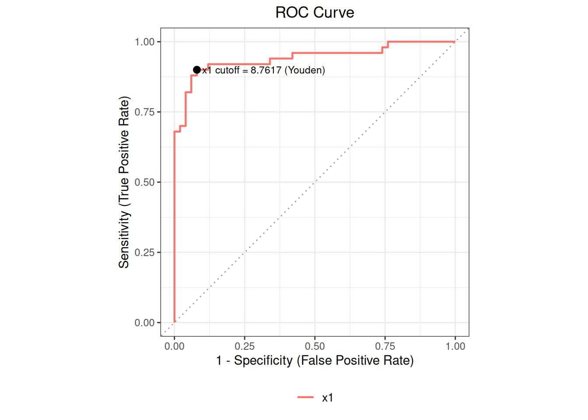
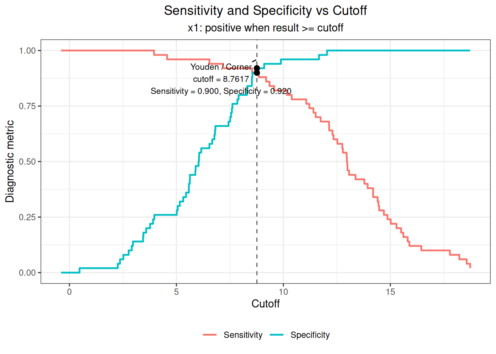

%%{init: {"theme":"base","themeVariables":{"primaryColor":"#EAF2FB","primaryBorderColor":"#2780E3","primaryTextColor":"#212529","lineColor":"#6C757D","secondaryColor":"#EAF7E6","tertiaryColor":"#FFF4E8","fontSize":"13px"},"flowchart":{"nodeSpacing":18,"rankSpacing":24,"padding":6}}}%%
flowchart LR
A["Binary reference state<br/>Quantitative marker"] --> B["roc()<br/>Complete cases and direction"]
B --> C["describe()<br/>Data checks"]
B --> D["auc()<br/>AUC and interval"]
D --> E["cutoff()<br/>Candidate thresholds and metrics"]
E --> F["plot() / summary()<br/>Interpretation and reporting"]
classDef input fill:#EAF2FB,stroke:#2780E3,color:#212529
classDef process fill:#EAF7E6,stroke:#3FB618,color:#212529
classDef output fill:#F4EEFB,stroke:#9954BB,color:#212529
class A input
class B,C,D,E process
class F output
11 ROC Curves and Cutoff Determination
This chapter demonstrates how to use ivdtools to evaluate the ability of a quantitative marker to distinguish a target state and, after confirming the classification direction, inspect candidate cutoffs. An ROC curve describes the trade-off between sensitivity and specificity across thresholds, AUC summarizes the complete empirical ROC, and a cutoff represents a particular decision point. These answer different questions.
ImportantScope of Use
ROC conclusions assume that the reference state is correct, the study population is representative, and the positive class is defined correctly. ivdtools currently provides an empirical ROC, trapezoidal AUC, a Hanley–McNeil standard error for a single curve, and two within-sample cutoff criteria. It does not provide partial AUC, intervals at fixed sensitivity or specificity, paired ROC tests, resampling uncertainty for cutoffs, sample-size design, or external validation.
The function automatically selects the geq or leq direction by comparing marker means in the positive and negative groups; there is no separate direction argument. A formal analysis must verify that the automatic direction agrees with the prespecified clinical meaning. An in-sample “optimal” cutoff is subject to selection bias and cannot be interpreted directly as a validated threshold in an independent population or as a recommended standard cutoff.
The single-marker ROC workflow is:
Code
library(ivdtools)
library(readr)11.1 Main Functions
| Function | Main purpose | Main result |
|---|---|---|
continuous_to_binary() |
Convert a continuous reference variable to 0/1 using a supplied threshold | Original data and a new <variable>_binary column |
roc() |
Create an ROC object and determine common complete cases and direction | Sample information, reference encoding, marker values, and direction |
describe() |
Describe the raw variables in the object | Numeric summaries and categorical frequencies |
auc() |
Calculate empirical ROC, AUC, standard error, and 95% CI | auc_list and auc_table |
cutoff() |
Calculate diagnostic metrics at candidate thresholds and two optimization criteria | cutoff_table |
plot() |
Plot ROC or cutoff–metric curves | ggplot figure |
summary() |
Summarize analysis slots already run | ROC object summary |
11.1.1 Convert a Continuous Reference Variable with continuous_to_binary()
Code
continuous_to_binary(data, cols, cutoff)| Argument | Description |
|---|---|
data |
Data frame. |
cols |
One or more names of numeric columns to convert. |
cutoff |
A finite numeric value. A length-one value is recycled for all columns; otherwise it must have the same length as cols. |
For variable \(j\), the function applies
\[ B_{ij}=I(X_{ij}\ge c_j). \]
The original columns are retained and <variable>_binary is added. Equality at the cutoff is always assigned to 1; the function does not support a <= direction. Use it only when this binary definition has already been established by the protocol or an external reference. Do not repeatedly search for a reference-variable threshold in the same data to improve ROC performance.
The function returns a data frame with the original columns and the new <variable>_binary columns.
11.1.2 Create an Analysis Object with roc()
Code
roc(data, cols, reference, id = NULL, positive = NULL)| Argument | Description |
|---|---|
data |
Data frame. |
cols |
One or more numeric marker-column names. |
reference |
Name of one reference-state column; it may be numeric 0/1, a two-level factor, or a two-value character vector. |
id |
Optional subject identifier; used only to report repeated IDs and does not deduplicate automatically. |
positive |
Positive level for a factor or character reference. If omitted, the last level after sorting is used. For numeric 0/1, 1 is positive when omitted. |
roc() requires the reference and all cols to be finite and complete. Define
\[ R_i=I(Y_i\text{ is complete})\prod_{j=1}^{p}I(X_{ij}\text{ is finite and complete}), \]
and include only subjects with \(R_i=1\) in the object. Even if auc() is later called for only a subset of cols, the analysis sample remains the common complete-case set determined by all markers when the object was created. Create separate objects if each marker should use its own complete cases.
For marker \(X_j\), the source compares group means:
\[ \bar X_{j,+}\ge\bar X_{j,-}\Rightarrow \widehat Y=I(X_j\ge c)\quad(\texttt{geq}), \]
\[ \bar X_{j,+}<\bar X_{j,-}\Rightarrow \widehat Y=I(X_j\le c)\quad(\texttt{leq}). \]
This is a computational direction, not a validation of clinical direction. An extreme value can affect a group mean and select the wrong direction; inspect col_direction and compare it with the protocol.
Main fields include n, n_pos, n_neg, n_total, cols_values, reference_binary, col_direction, and print, followed by describe, auc_list, auc_table, cutoff_table, and mlr_results as later analyses are added.
The returned object has class roc, stores common complete cases, reference states, marker values, and automatic directions, and is updated by subsequent analyses.
11.1.3 Descriptive Statistics with describe()
The function returns a descriptive-statistics data frame. Numeric columns contain sample size, mean, SD, quantiles, and range; categorical columns contain frequencies and percentages.
Code
describe(x, cols = NULL, digits = 4L)When cols=NULL, the function describes all columns in the original data except an explicitly supplied ID, not only ROC markers. Numeric columns provide \(n\), mean, SD, minimum, quartiles, and maximum; factors, characters, and the reference column provide frequencies and percentages. The current implementation does not summarize marker distributions separately by positive and negative group, so group differences require a separate table or plot.
11.1.4 AUC with auc()
Code
auc(x, cols = NULL)The empirical ROC is calculated at every distinct observed value and at the two \(±\infty\) thresholds, and the AUC is integrated by trapezoids over false-positive rate, \(\mathrm{FPR}=1-\mathrm{Sp}\). Equivalently, it is the rank statistic
\[ \widehat A= \frac{1}{n_+n_-} \sum_{i:Y_i=1}\sum_{j:Y_j=0} \left[I(X_i>X_j)+\frac12I(X_i=X_j)\right], \]
with the order reversed when low values represent the positive class. AUC estimates the probability that a randomly selected positive and negative subject are correctly ordered by the selected direction; it is not the accuracy at a particular cutoff.
The current standard error uses the Hanley–McNeil approximation. Let
\[ Q_1=\frac{\widehat A}{2-\widehat A},\qquad Q_2=\frac{2\widehat A^2}{1+\widehat A}, \]
then
\[ \operatorname{SE}(\widehat A)= \sqrt{\frac{ \widehat A(1-\widehat A) (n_+-1)(Q_1-\widehat A^2) (n_--1)(Q_2-\widehat A^2)} {n_+n_-}}. \]
The 95% CI is \(\hat A\pm1.96\,\operatorname{SE}(\widehat A)\), truncated to \([0,1]\). When AUC is exactly 0 or 1, the current implementation returns NA for the standard error and interval rather than an exact or resampling interval.
The updated roc object stores ROC points, AUC, standard error, and interval for each marker in auc_list, with a summary table in auc_table.
11.1.5 Cutoff Analysis with cutoff()
Code
cutoff(x, cols = NULL)Run auc() first. For the geq direction, predicted positive means \(X_i\ge c\); for leq, it means \(X_i\le c\). At each candidate threshold, calculate
\[ \mathrm{Se}=\frac{TP}{TP+FN},\qquad \mathrm{Sp}=\frac{TN}{TN+FP}, \]
\[ \mathrm{PPV}=\frac{TP}{TP+FP},\qquad \mathrm{NPV}=\frac{TN}{TN+FN},\qquad \mathrm{Accuracy}=\frac{TP+TN}{N}. \]
precision in the table means PPV. The two automatic criteria are the maximum of
\[ J(c)=\mathrm{Se}(c)+\mathrm{Sp}(c)-1 \]
(Youden) and the minimum of
\[ d(c)=\sqrt{[1-\mathrm{Se}(c)]^2+[1-\mathrm{Sp}(c)]^2} \]
(Corner). The candidate set consists of observed values and two infinite endpoints; the endpoints complete the ROC but are not reported as optimal finite cutoffs. If several finite thresholds tie, the source selects the first in its internal order: descending for geq and ascending for leq. Thus the automatic result also has a deterministic tie-breaking rule.
WarningObserved-Value Cutoffs versus Open-Interval Cutoffs
Manual EP24 tables often place a cutoff in the open interval between adjacent observations. ivdtools uses observed values as thresholds and assigns equality to the positive side. A report must therefore state the decision rule, such as “results \(≥9.5\) are positive,” rather than only writing “cutoff 9.5”; open-interval endpoints and implemented thresholds must not be conflated.
The updated roc object stores candidate thresholds, confusion matrices, diagnostic metrics, and the two selection criteria in cutoff_table.
11.1.6 Plotting and Summary with plot() and summary()
Code
plot(x, curves = NULL, cutpoint = NULL,
type = c("roc", "cutoff"))
summary(x)curves=NULLselects all original markers by default;curves="all"selects all original markers and saved MLR models. A character vector such asc("x1", "combined")can mix both.type="roc"plots sensitivity against \(1-\mathrm{Sp}\). An original marker requiresauc()first.cutpointcan be"Youden","Corner", or"all"and requirescutoff()first; it labels only the selected original marker.type="cutoff"plots sensitivity and specificity against finite thresholds for one original marker. Only one original marker may be specified incurves; MLR model probabilities are not currently supported.summary()summarizes analyses already present in the object; it does not automatically rundescribe(),auc(), orcutoff().
plot() invisibly returns a ggplot object; summary() prints and invisibly returns the input roc object.
11.2 Analysis Examples
11.2.1 Teaching Data: Complete Single-Marker Workflow
Code
roc_dat <- as.data.frame(read_csv(
"./data/011-ROC曲线与cutoff/roc-example.csv",
show_col_types = FALSE
))
head(roc_dat, 6) sid ref x1
1 1 0 7.594080
2 2 0 8.312513
3 3 0 5.885744
4 4 0 5.585100
5 5 0 9.568483
6 6 0 2.364555Code
roc_fit <- roc(
roc_dat, cols = "x1", reference = "ref", id = "sid"
)
print(roc_fit)
ROC Analysis
Data class: data.frame
Total rows: 100
Complete cases: 100
Reference: ref (binary)
Reference coding: binary (0/1)
Positive / Neg: 50 / 50
Evaluation cols: 1 (x1)
Duplicate IDs: none
Analysis slots:
[ ] Describe
[ ] AUC
[ ] Paired AUC comparison
[ ] Cutoff
[ ] MLRCode
roc_fit <- describe(roc_fit, cols = c("x1", "ref"))
Descriptive Statistics
Variable n Mean SD Min Q1 Median Q3 Max NA
---------------------------------------------------------------------------
x1 100 9.2576 4.4744 -0.3894 5.8224 8.5472 12.9591 18.7295
ref
Level Count Percent
--------------------------------------
0 50 50.0%
1 50 50.0%Code
roc_fit <- auc(roc_fit)
AUC Table
Column AUC 95% CI Direction
------------------------------------------------------------
x1 0.9420 [0.8940, 0.9900] geqThe AUC in this example is 0.9420, with a Hanley–McNeil 95% CI of 0.8937–0.9903; the direction is geq. These results describe the apparent discrimination of the current 100 teaching cases.
Code
roc_fit <- cutoff(roc_fit)
Optimal Cutoff Analysis
Column: x1
Youden / Corner: cutoff = 8.7617 (sens = 0.9000, spec = 0.9200, Youden = 0.8200)
Full cutoff table:
Cutoff Sens Spec TP FP TN FN Youden
----------------------------------------------------------------------
Inf 0.0000 1.0000 0 0 50 50 0.0000
18.7295 0.0200 1.0000 1 0 50 49 0.0200
18.5675 0.0400 1.0000 2 0 50 48 0.0400
18.2248 0.0600 1.0000 3 0 50 47 0.0600
17.7837 0.0800 1.0000 4 0 50 46 0.0800
16.4453 0.1000 1.0000 5 0 50 45 0.1000
15.8893 0.1200 1.0000 6 0 50 44 0.1200
15.8087 0.1400 1.0000 7 0 50 43 0.1400
15.6058 0.1600 1.0000 8 0 50 42 0.1600
15.5003 0.1800 1.0000 9 0 50 41 0.1800
15.2855 0.2000 1.0000 10 0 50 40 0.2000
15.0168 0.2200 1.0000 11 0 50 39 0.2200
14.8639 0.2400 1.0000 12 0 50 38 0.2400
14.6980 0.2600 1.0000 13 0 50 37 0.2600
14.4757 0.2800 1.0000 14 0 50 36 0.2800
14.4469 0.3000 1.0000 15 0 50 35 0.3000
14.4042 0.3200 1.0000 16 0 50 34 0.3200
14.1952 0.3400 1.0000 17 0 50 33 0.3400
14.1938 0.3600 1.0000 18 0 50 32 0.3600
13.9382 0.3800 1.0000 19 0 50 31 0.3800
13.7845 0.4000 1.0000 20 0 50 30 0.4000
13.3718 0.4200 1.0000 21 0 50 29 0.4200
13.0699 0.4400 1.0000 22 0 50 28 0.4400
12.9970 0.4600 1.0000 23 0 50 27 0.4600
12.9854 0.4800 1.0000 24 0 50 26 0.4800
12.9659 0.5000 1.0000 25 0 50 25 0.5000
12.9569 0.5200 1.0000 26 0 50 24 0.5200
12.7812 0.5400 1.0000 27 0 50 23 0.5400
12.7534 0.5600 1.0000 28 0 50 22 0.5600
12.5227 0.5800 1.0000 29 0 50 21 0.5800
12.3440 0.6000 1.0000 30 0 50 20 0.6000
12.2962 0.6200 1.0000 31 0 50 19 0.6200
12.1394 0.6400 1.0000 32 0 50 18 0.6400
12.1354 0.6600 1.0000 33 0 50 17 0.6600
12.0393 0.6800 1.0000 34 0 50 16 0.6800
11.7418 0.6800 0.9800 34 1 49 16 0.6600
11.6642 0.7000 0.9800 35 1 49 15 0.6800
11.5082 0.7000 0.9600 35 2 48 15 0.6600
11.4038 0.7200 0.9600 36 2 48 14 0.6800
11.2133 0.7400 0.9600 37 2 48 13 0.7000
11.0696 0.7600 0.9600 38 2 48 12 0.7200
10.3902 0.7800 0.9600 39 2 48 11 0.7400
10.1719 0.8000 0.9600 40 2 48 10 0.7600
9.8836 0.8200 0.9600 41 2 48 9 0.7800
9.5685 0.8200 0.9400 41 3 47 9 0.7600
9.3526 0.8400 0.9400 42 3 47 8 0.7800
9.1944 0.8600 0.9400 43 3 47 7 0.8000
9.1032 0.8800 0.9400 44 3 47 6 0.8200
8.8558 0.8800 0.9200 44 4 46 6 0.8000
8.7617 0.9000 0.9200 45 4 46 5 0.8200
8.5538 0.9000 0.9000 45 5 45 5 0.8000
8.5406 0.9000 0.8800 45 6 44 5 0.7800
8.5296 0.9200 0.8800 46 6 44 4 0.8000
8.5259 0.9200 0.8600 46 7 43 4 0.7800
8.3125 0.9200 0.8400 46 8 42 4 0.7600
8.2985 0.9200 0.8200 46 9 41 4 0.7400
7.9078 0.9200 0.8000 46 10 40 4 0.7200
7.8493 0.9200 0.7800 46 11 39 4 0.7000
7.6187 0.9200 0.7600 46 12 38 4 0.6800
7.5941 0.9200 0.7400 46 13 37 4 0.6600
7.5556 0.9200 0.7200 46 14 36 4 0.6400
7.5150 0.9200 0.7000 46 15 35 4 0.6200
7.4355 0.9200 0.6800 46 16 34 4 0.6000
7.1837 0.9200 0.6600 46 17 33 4 0.5800
6.8235 0.9400 0.6600 47 17 33 3 0.6000
6.8029 0.9400 0.6400 47 18 32 3 0.5800
6.7765 0.9400 0.6200 47 19 31 3 0.5600
6.6770 0.9400 0.6000 47 20 30 3 0.5400
6.5446 0.9400 0.5800 47 21 29 3 0.5200
6.5440 0.9600 0.5800 48 21 29 2 0.5400
6.1603 0.9600 0.5600 48 22 28 2 0.5200
6.0665 0.9600 0.5400 48 23 27 2 0.5000
6.0554 0.9600 0.5200 48 24 26 2 0.4800
6.0361 0.9600 0.5000 48 25 25 2 0.4600
5.9000 0.9600 0.4800 48 26 24 2 0.4400
5.8857 0.9600 0.4600 48 27 23 2 0.4200
5.6326 0.9600 0.4400 48 28 22 2 0.4000
5.6281 0.9600 0.4200 48 29 21 2 0.3800
5.5851 0.9600 0.4000 48 30 20 2 0.3600
5.5802 0.9600 0.3800 48 31 19 2 0.3400
5.4514 0.9600 0.3600 48 32 18 2 0.3200
5.3207 0.9600 0.3400 48 33 17 2 0.3000
5.1582 0.9600 0.3200 48 34 16 2 0.2800
5.0599 0.9600 0.3000 48 35 15 2 0.2600
5.0167 0.9600 0.2800 48 36 14 2 0.2400
4.5654 0.9600 0.2600 48 37 13 2 0.2200
3.9706 0.9800 0.2600 49 37 13 1 0.2400
3.9552 0.9800 0.2400 49 38 12 1 0.2200
3.9103 1.0000 0.2400 50 38 12 0 0.2400
3.7719 1.0000 0.2200 50 39 11 0 0.2200
3.5881 1.0000 0.2000 50 40 10 0 0.2000
3.4583 1.0000 0.1800 50 41 9 0 0.1800
3.4422 1.0000 0.1600 50 42 8 0 0.1600
2.9673 1.0000 0.1400 50 43 7 0 0.1400
2.9111 1.0000 0.1200 50 44 6 0 0.1200
2.7698 1.0000 0.1000 50 45 5 0 0.1000
2.5203 1.0000 0.0800 50 46 4 0 0.0800
2.3646 1.0000 0.0600 50 47 3 0 0.0600
2.2596 1.0000 0.0400 50 48 2 0 0.0400
0.4733 1.0000 0.0200 50 49 1 0 0.0200
-0.3894 1.0000 0.0000 50 50 0 0 0.0000
-Inf 1.0000 0.0000 50 50 0 0 0.0000Both criteria select 8.76. Because the direction is geq, this means \(x_1\ge8.76\) is classified as positive. In the current sample, sensitivity is 0.90, specificity is 0.92, and the Youden index is 0.82. PPV and NPV also depend on the positive proportion in the study data and cannot be extrapolated directly to populations with a different prevalence.
Code
plot(roc_fit, cutpoint = "Youden")
Code
plot(roc_fit, curves = "x1", type = "cutoff", cutpoint = "all")
11.2.2 CLSI EP24-A2 Example 1: Empirical ROC and Threshold Intervals
EP24 Table 1 gives 8 subjects and 7 distinct measurement values; there are 4 positive and 4 negative cases, with one cross-group tie at 15.1 ng/mL.
Code
ep24_example1 <- as.data.frame(read_csv(
"./data/011-ROC曲线与cutoff/std-ep24-example1.csv",
show_col_types = FALSE
))
ep24_example1_fit <- roc(
ep24_example1, cols = "assay",
reference = "status", id = "id"
)
ep24_example1_fit <- auc(ep24_example1_fit)
AUC Table
Column AUC 95% CI Direction
------------------------------------------------------------
assay 0.7812 [0.4390, 1.0000] geqCode
ep24_example1_fit <- cutoff(ep24_example1_fit)
Optimal Cutoff Analysis
Column: assay
Youden / Corner: cutoff = 9.5000 (sens = 0.7500, spec = 0.7500, Youden = 0.5000)
Full cutoff table:
Cutoff Sens Spec TP FP TN FN Youden
----------------------------------------------------------------------
Inf 0.0000 1.0000 0 0 4 4 0.0000
24.8000 0.2500 1.0000 1 0 4 3 0.2500
15.1000 0.5000 0.7500 2 1 3 2 0.2500
9.5000 0.7500 0.7500 3 1 3 1 0.5000
7.0000 0.7500 0.5000 3 2 2 1 0.2500
6.4000 1.0000 0.5000 4 2 2 0 0.5000
2.1000 1.0000 0.2500 4 3 1 0 0.2500
1.6000 1.0000 0.0000 4 4 0 0 0.0000
-Inf 1.0000 0.0000 4 4 0 0 0.0000| Standard position | Statistic | Standard result | ivdtools result |
|---|---|---|---|
| EP24-A2 Example 1 | AUC | 0.78 | 0.7812 |
| EP24-A2 Example 1 | Youden cutoff | NA | 9.5000 |
| EP24-A2 Example 1 | Sensitivity | 0.75 | 0.7500 |
| EP24-A2 Example 1 | Specificity | 0.75 | 0.7500 |
EP24 Table 2 places the decision point between adjacent observations, whereas ivdtools uses the observed value 9.5 with a “\(≥\)” rule. This is a difference in threshold notation.
The Youden index also reaches the same maximum across 2.1–6.4. EP24 uses this example to show that the maximum sum and the closest point to the upper-left corner can yield two cutoffs. When Youden values tie, the current software takes 9.5 first under the descending geq candidate order and labels that row Youden / Corner. This is a difference in threshold representation and tie handling, not an error in sensitivity, specificity, or AUC.
11.2.3 CLSI EP24-A2 Appendix D: Single-Curve OxLDL AUC
Appendix D contains 50 subjects, including 28 diagnostic positives and 22 negatives. This section checks only the published OxLDL single-curve AUC, Hanley–McNeil standard error, and normal-approximation interval.
Code
ep24 <- as.data.frame(read_csv(
"./data/公共/std-ep24-appendix-d.csv",
show_col_types = FALSE
))
ep24_oxldl <- roc(
ep24, cols = "oxldl",
reference = "diagnosis", id = "id"
)
ep24_oxldl <- auc(ep24_oxldl)
AUC Table
Column AUC 95% CI Direction
------------------------------------------------------------
oxldl 0.7995 [0.6777, 0.9213] geq| Standard position | Statistic | Standard result | ivdtools result |
|---|---|---|---|
| OxLDL | AUC | 0.800 | 0.799513 |
| OxLDL | SE | 0.062 | 0.062140 |
| OxLDL | CI_lower | 0.680 | 0.677718 |
| OxLDL | CI_upper | 0.920 | 0.921308 |
Appendix D does not recommend an OxLDL cutoff. The following automatically selected result is therefore only a teaching-derived result for the current data:
Code
ep24_oxldl <- cutoff(ep24_oxldl)
Optimal Cutoff Analysis
Column: oxldl
Youden / Corner: cutoff = 71.0000 (sens = 0.6429, spec = 0.8636, Youden = 0.5065)
Full cutoff table:
Cutoff Sens Spec TP FP TN FN Youden
----------------------------------------------------------------------
Inf 0.0000 1.0000 0 0 22 28 0.0000
143.0000 0.0357 1.0000 1 0 22 27 0.0357
116.0000 0.0714 1.0000 2 0 22 26 0.0714
96.0000 0.1071 1.0000 3 0 22 25 0.1071
95.0000 0.1429 1.0000 4 0 22 24 0.1429
88.0000 0.1786 1.0000 5 0 22 23 0.1786
86.0000 0.2143 1.0000 6 0 22 22 0.2143
83.0000 0.2500 1.0000 7 0 22 21 0.2500
82.0000 0.2857 1.0000 8 0 22 20 0.2857
78.0000 0.3571 1.0000 10 0 22 18 0.3571
77.0000 0.4286 0.9545 12 1 21 16 0.3831
76.0000 0.5357 0.9545 15 1 21 13 0.4903
74.0000 0.5357 0.9091 15 2 20 13 0.4448
73.0000 0.5714 0.8636 16 3 19 12 0.4351
72.0000 0.6071 0.8636 17 3 19 11 0.4708
71.0000 0.6429 0.8636 18 3 19 10 0.5065
70.0000 0.6429 0.8182 18 4 18 10 0.4610
66.0000 0.7143 0.7273 20 6 16 8 0.4416
64.0000 0.7500 0.6818 21 7 15 7 0.4318
63.0000 0.7500 0.6364 21 8 14 7 0.3864
62.0000 0.7500 0.5909 21 9 13 7 0.3409
61.0000 0.7500 0.5455 21 10 12 7 0.2955
60.0000 0.8571 0.5000 24 11 11 4 0.3571
59.0000 0.8571 0.4545 24 12 10 4 0.3117
57.0000 0.8929 0.4545 25 12 10 3 0.3474
54.0000 0.8929 0.3636 25 14 8 3 0.2565
53.0000 0.9286 0.3636 26 14 8 2 0.2922
52.0000 0.9286 0.3182 26 15 7 2 0.2468
51.0000 0.9286 0.2727 26 16 6 2 0.2013
48.0000 0.9286 0.2273 26 17 5 2 0.1558
45.0000 0.9643 0.2273 27 17 5 1 0.1916
44.0000 0.9643 0.1818 27 18 4 1 0.1461
42.0000 0.9643 0.0909 27 20 2 1 0.0552
41.0000 1.0000 0.0909 28 20 2 0 0.0909
37.0000 1.0000 0.0455 28 21 1 0 0.0455
22.0000 1.0000 0.0000 28 22 0 0 0.0000
-Inf 1.0000 0.0000 28 22 0 0 0.0000